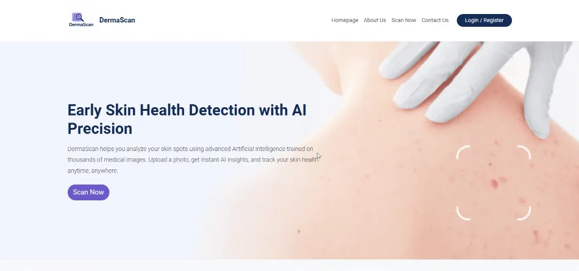

Upload a photo of a skin lesion and get an AI analysis across 7 lesion types. Patients open cases and scan, doctors review the AI result, and admins manage everything.
EfficientNetB0 · TensorFlow
HAM10000 · 7 classes
PHP · MySQL
Patient · Doctor · Admin
Team of six
dermascan

These are real screens of the running system, recorded from our local build (PHP and MySQL on XAMPP, with the Python model behind the scan). The original server was local only, so this page lets you click through it without installing anything.